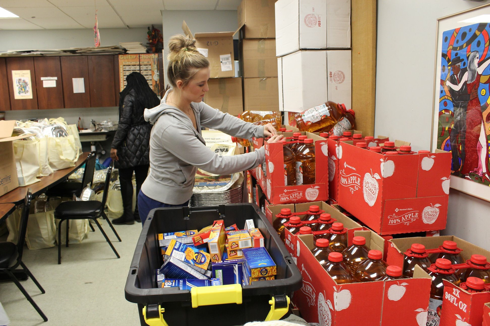

Do I have to register and/or schedule a time before volunteering?
Yes, you do have to register by filling out our “TCNJ Meals - Volunteer Registration Form”. We prefer you fill this out in advance and emailing us the completed form to tcnjmeals@gmail.com, but you also have the option of filling it out at our office the same day.
Although you do not necessarily need to schedule a time to volunteer, you can simply give us a call or email and notify our staff when you would like to come in. We would be able to offer you other dates that may better serve us, such as more busy donation days like around the holidays or certain events we host. Also, our form has a field where you can indicate the day or days you would like to volunteer, and this notifies us in advance and we can reach out to you if there are any conflicts.
What time should volunteers come?
They can come at any time during our hours of operation. Since we do not prepare and serve meals, but rather organize donations and inquiries, we do not need volunteers at any specific time of the day.
What should I wear when I volunteer?
Please wear comfortable clothes with closed toed shoes. An example would be a t-shirt, jeans, and running shoes. Gym attire is acceptable as well.
How can I get credit for volunteering?
We have an electronic database that our TCNJ Meals staff will manage. If you need receipt of your volunteer hours for any reason (court-ordered, greek life requirements, etc), we will be happy to email you the hours you completed.
Are there any requirements to volunteer? Do I have to be a TCNJ student or a certain age?
No, there are no specific requirements! You can be from the local high school, a part of a company, or simply a local resident!
Who can I contact if I have more questions about volunteering?
You can contact Keith Alexander Jr., Director of Operations, at volunteertcnjmeals@gmail.com, (908) 239-6308, or visit us at our office.